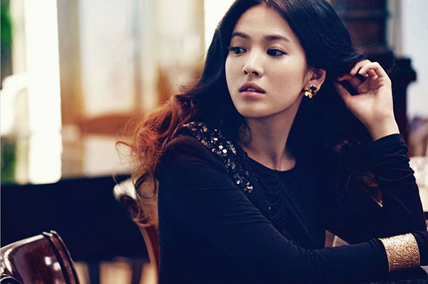
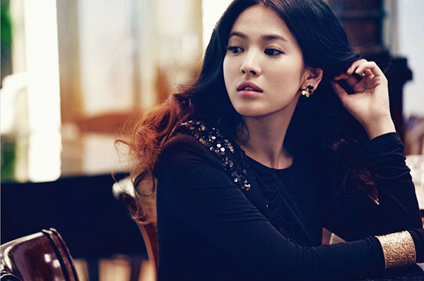

초등학교 1학년 때부터 쇼트트랙 선수로 활약했으며 대전광역시 대표 선수로 전국체육대회에도 3차례 출전했으나, 중학교 2학년 때 발목 부상으로 선수 생활을 마감했다. 본인의 전부였던 쇼트트랙을 할 수 없게 된 상황에 속상한 기분이 들었지만 마음을 다잡고 공부에 전념했다고 한다. 영어와 수학은 선수 시절에도 과외를 받아 꾸준히 공부를 해서 크게 걱정은 없었고, 승부욕과 오기를 가지고 공부를 했더니 금방 성적이 올랐다고 한다.
고교 시절에는 온전히 학업에 집중했다고 한다. 고3 때는 내신 성적이 '올 수'였으며 전교부회장을 맡았을 정도로 학교 생활을 열심히 한 것으로 보인다. 담임 선생님이 신문을 통해 송중기에게 편지를 보냈는데, 그 편지 내용에는 "학생들의 정당한 주장을 관철시키기 위해 적극적으로 행동했던 네가, 지금 생각해봐도 참 대견하구나"라고 써있었던 걸 보면 리더십 또한 있었던 것으로 보인다. 또 훈훈한 외모 때문에, 옆 학교 여학생들이 축제 때 직접 보러오기도 했다고 한다.
고교 시절 담임 선생님과 본인의 인터뷰에 의하면, 현역 시절 수시 전형으로 서울대학교, 고려대학교, 연세대학교 관련 계열을 지원하여 서울대와 고려대에는 떨어졌지만, 연세대에 합격했다. 그런데 아쉽게도 수능 최저 등급을 맞추지 못해 최종 불합격하게 되었다. 그러고 나서 정시 전형으로 충남대학교 경영학부 [12][13]에 지원해 합격했다. 그의 부모님은 집과 가까워 통학할 수 있는 충남대학교에 가라고 권유했지만, 본인은 만족하지 못해 재수를 결심했다. 부모님의 반대에도 불구하고 할 수 있다는 걸 보여주고자 부모님 카드를 들고 상경, 곧장 학원으로 가서 학원비 130만 원을 3개월 할부로 결제했다고 한다.
 
